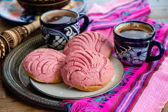

Pan dulce Conchas


Traditional Conchas
Pan dulce concha, known for its distinctive seashell-like topping and soft, buttery texture, often enjoyed with coffee or hot chocolate. The topping is typically flavored with vanilla, chocolate, or strawberry and the bread itself is often enriched with butter, sugar, and cinnamon. Conchas are a beloved treat in Mexico and are widely available in mexican bakeries across the Untied States.
Ingredients
Concha Dough:
- 3 tablespoons warm water
- 2 1/2 teaspoons vegetable oil
- 1/2 cup melted butter
- 1 tablespoon vegetable oil
- 1/3 cup white granulated sugar
- 3/4 cup evaporated milk
- 2 teaspoons kosher salt
- 2 teaspoons pure vanilla extract
- 2 teaspoons ground cinnamon
- 2 large eggs at room temperature
- 4 cups all purpose flour
Streuesel Topping:
- 1/2 cup unsalted butterat room temperature
- 2/3 cup white granulated sugar
- 1 cup all purpose flour
- 1 teaspoon pure vanilla extract
- 2 tablespoons cocoa powder
- Food coloring Gel
Directions
To Make The Concha Dough:
- To the bowl of a stand-up mixer with the hook attachment (you can also do this in a large bowl and knead it by hand!), add the warm water. Pour the active dry yeast on top and mix in into the water. Allow to stand until foamy, about 5 to 7 minutes. If it doesn’t get foamy then you’ll need to do it again.
- When the active dry yeast is foamy, pour in the vegetable oil, melted butter, granulated sugar, evaporated milk, salt, vanilla, ground cinnamon and eggs. Break up the eggs with the back of a spatula and allow the dough hook to mix it up a bit, about 30 seconds.
- Next, pour the flour in all at once and run the machine for about 5 minutes on medium speed, until the dough is soft and smooth. If you’re doing this by hand, once the dough comes together, you’ll want to dump it out onto your floured counter and knead it for about 10 minutes, until it’s nice and smooth.
- Rub a large bowl with oil or spray it with cooking spray and place the dough in the center of the bowl. Cover it with a clean kitchen towel and allow it to rise for about 1 hour, until doubled in size.
To Make the Streuesel-Topping:
- In the bowl of stand-up mixer with the paddle attachment (you could also mix this by hand if you don’t have a mixer), add the butter, sugar, flour and vanilla extract. Mix until smooth, about 1 minute.
- Divide the dough in two. To one part of the topping, add a drop of food coloring gel. To the other topping, add the cocoa powder and knead until it’s cohesive.
To Assemble The Conchas:
- Once the dough has risen, divide the dough into 12 equal parts. Or better yet, weigh them into balls of 100g. Form the balls of dough into rounds. Repeat until you’ve worked through all of the dough.
- Take about 2 tablespoons of the topping and rollout using our palms, flatting it into a thin round. Drape it over the round of dough, patting down lightly. Using a knife, cut grooves in the topping like a clam shell. You can also do other types of cuts like criss cross, circles, etc. Cover and let rise until nearly doubled, about 30 minutes.
- Preheat oven to 350 degrees. Bake for about 18 to 20 minutes, or until lightly golden brown. Allow to cool. Serve with hot chocolate or coffee